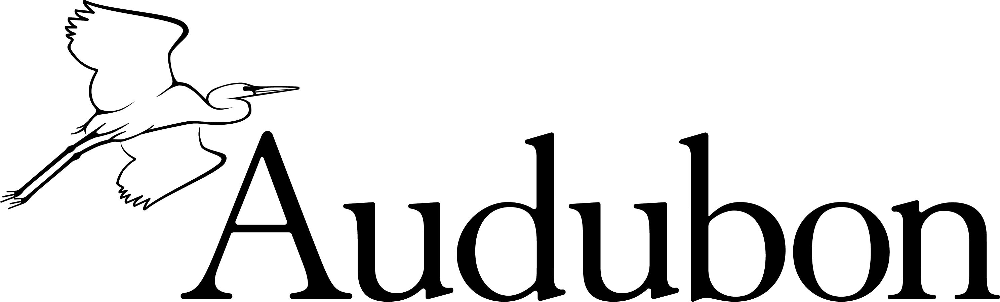

Growing a community where people and the environment thrive together — at the University of Arizona.
The University of Arizona Epsilon Eta aims to create a networking environment that enables members to utilize the fraternity's resources as they pursue their postgraduate plans in environmental fields. In this process, we strive to foster a conscious awareness of the intrinsic relationship between people and their environment through academics, professional development, service, and community.
We are a non-profit organization and will seek out opportunities to support other non-profit organizations within the University of Arizona and the greater Tucson area.
Epsilon Eta, Tau Chapter, as an organization respectfully acknowledges we use the land and territories of Indigenous peoples. Arizona is the home of 22 federally recognized tribes — Tucson being the home of the O'odham and the Yaqui. Epsilon Eta is committed to learning and helping Indigenous communities through educating our organization about Indigenous peoples, sustainable efforts for the conservation of the land, and diversity through the organization.
Brotherhood is one of the biggest pieces of our organization. It is our members we can thank for the unique and passionate qualities that trickle down through the rest of our club. Brother hikes, study picnics, date dashes, and potluck nights are our favorite ways to spend time together.
As members of the Tucson community, we are devoted to lending a hand whenever we get the chance. We've partnered with organizations like Tucson Clean & Beautiful and the Sonoran Institute on buffelgrass pulls, adopted road cleanups, and tree planting.
Building our resources and networking is a huge part of Epsilon Eta and its possibilities, built through academic and occupational connections across the University — professional panels, interview competitions, resume-building, and grant-writing workshops.

See what the chapter has been up to — service days, socials, and the latest news on our projects.
Recruitment takes place every Fall and is open to all majors with a career interest in the environment. Follow us on Instagram to hear about it first.